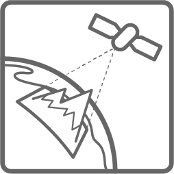
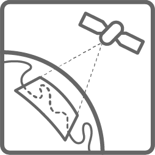
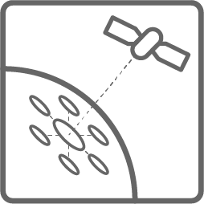

Advanced Analysis
Advanced analytical techniques go beyond inter-band math, and may classify data into predefined fuzzy or map-like categories using machine learning techniques, compare imagery taken at different times to detect change, compar imagery taken at different angles to estimate elevation, or combine multiple source datasets to exploit the best qualities of each. These techniques often result in data products like 3D terrain maps, forest density estimates, maps showing fire and burn scar extent, measurements of crop type and health, maps of land cover types, or maps showing the probability of certain minerals existing along a gradient. These techniques are most computationally intensive and require significant processing resources, but the increasing availability of elastic cloud computing has made them more practical for development organizations.

Elevation and Surface
Elevation and Surface models are constructed by calculating the offset in radar or image-based data acquired from different angles. 3D terrain models are used to measure landslide or flood risk. 3D urban models are used to measure and manage vertical growth of cities, and can be used to calculate sight lines, shadow, and the corresponding implications for solar power or urban gardening initiatives.

Change Detection
Analysis of imagery from different time periods to detect and understand changes. Examples include urban growth, deforestation, ice melting, landslide detection, and tracking urban conflict.

Feature Extraction
Analysis of imagery to extract and identify features. These can include man-made (buildings, roads, structures, crops, cars) and natural objects (land cover, water extent, forest health and species). Once extracted, these items can be sorted, counted, and analyzed.